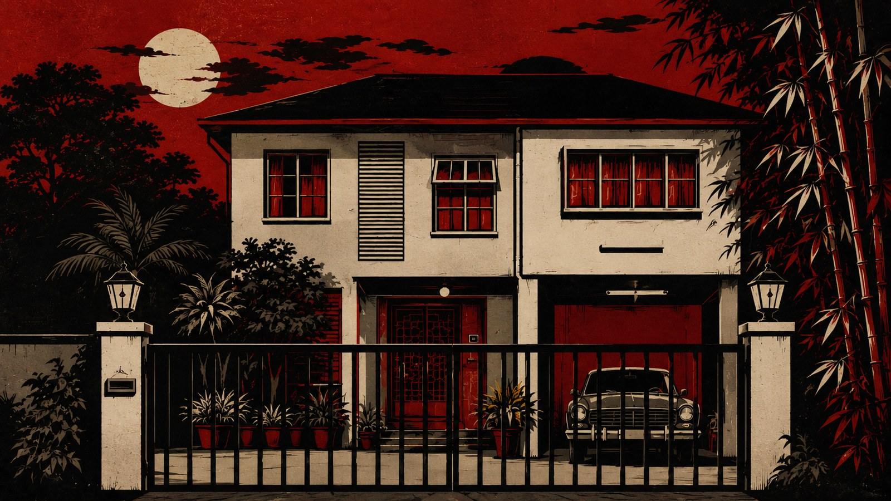

Welcome to Samasihat
The road is gone.
The weekend has only just begun.
A wellness retreat. A houseful of strangers. A murderer among them.
A Feisk Productions film
Samasihat Wellness Retreat
Everyone in the house is a question mark.
Newlyweds Mimi and Jay transform Mimi’s inherited family bungalow into an isolated wellness retreat. Their first weekend is disrupted by relentless rain, flooding and a fallen tree that cuts off the road. When an unexpected traveller and a police inspector arrive with news that a Kuala Lumpur murder may be connected to the retreat, every person in the house becomes a question mark.

Samasihat Wellness Retreat
The House
Choose a room below to step inside.
Film information
More from TIKUS
- Trailer
- URL pending
- Release date
- To be announced
- Social media
- URL pending
- Cast portrait
- Approved artwork pending
- Press kit
- Download pending